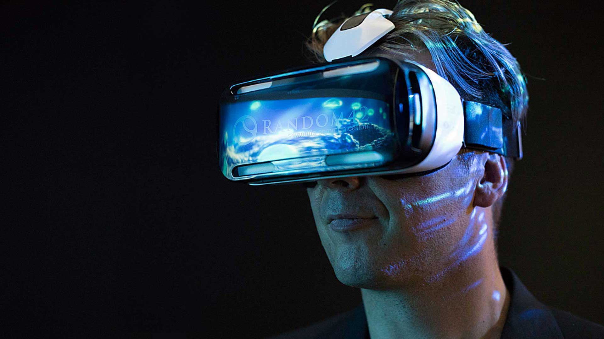

Click button to see our project now!
Overview
Our theme is to make a game related to VR, which allows players to enter the virtual game world, providing visual, auditory, tactile, etc., players can experience the immersive experience, while free to explore the game world.
Players can experience the game world deeper and more intuitively, realize various illusions that cannot be realized in real life, and let the game develop to a new ladder. Our theme is to make a game related to VR, it is the key to our theme.
The motivation for our VR games is because VR has great potential and market. Whether it is end-game, page tour or mobile game development, the market is almost saturated, and regardless of mobile game startups, even traditional mobile game development companies. It is also getting more and more difficult in the fierce market competition. The capacity of the entire market and the capacity of the mobile game market are completely out of the entrepreneurial field of a grade. This is also an important reason why small and medium-sized CPs are concentrated in VR games. With the maturity of the global VR consumer market, the specific consumer versions of the three major VRs, HTC VIVE, oculus Rift and GEAR VR, are being released globally, and VR software startups are gradually becoming hot. VR will become the next Internet development. Trends With the gradual maturity of VR technology, VR games have also taken the opportunity to show their vitality and become the next slogan for game development. If we are working on this project in the future, we will show our understanding of VR to our prospective employers, our vision of the game, and showcase what we have accomplished, including game settings, character settings, and worldviews.
Existing VR devices are available, but improvements to current devices may be needed in the future. There have been many excellent VR games, such as EVE Valkyrie, Gunjack, Bullet Train, Summer Lesson, almost all the game companies in the world, have begun to pay attention to the development of VR games, so the competitiveness is still very big, how to get from many VR games It stands out from the crowd and we need to consider it. The current VR technology is not comprehensive enough, so the existing VR games are basically simple games, such as simple shooting games, music games, and so on. we are going to do a virtual world, a game that allows players to be truly there.
Aims
There are many problems with VR games at present, and solving these problems is our main Aims.
Game picture quality, motion control
VR technology is the most important. The immersive experience of VR games relies on the advancement of technology. At present, many VR games have certain problems in technology. In addition to the well-known problems such as dizziness and delay, the system also includes rough images. Caton, or Bug constantly. The motion control of VR games is also very important. Good motion control allows the player to control the game more comfortably and can reduce the sense of dizziness.
Game conception and design
Technology is undoubtedly a key factor in the success of VR games, but compared to VR technology, the concept and design of the game itself is the core and essence of the game, but also the fun of the players. Some games with outrageous stories, dull operations, and poorly designed games can easily get bored. So good game conception and design is very important.
Game operation and VR hardware cooperation
The operation of the game is inconsistent with the configuration of the VR hardware device, resulting in the player's unsatisfactory operation, which will not meet the needs of the player. The VR game operation is not coordinated with the device, which reduces the game experience, does not allow the player to immerse in the game, and the VR game is lost. Its meaning.
These problems are all problems in current VR games, and solving these problems is also our Aims.
Plans and Progress
Making a VR game is a huge project, which requires multiple production steps such as art, model, texture, lighting rendering, special effects, post-production, editing and debugging. Finally, it needs to be tested and modified repeatedly for a long time before it can be successful. All this is for more game lovers to have more immersive game experience process. It is different from traditional game development. VR games will encounter many problems and difficulties in the development process, such as the vertigo common in VR games. This is generally due to the lack of frame rate at which the game is running, especially without any optimization.So making sure the game runs at a sufficient frame rate is one of the goals that needs to be achieved during development. The development host must have a powerful processor and graphics card because such conditions can help the developer to complete the development and optimization work smoothly. Before we start, we should choose some powerful mainframe as the infrastructure.
Compared with traditional games, VR games should be considered more broadly in terms of art, because traditional games are more of a fixed camera perspective. VR games need to include more detail and a shift in the character's perspective. The realization of this will result in a significant increase in the initial drawing of the characters and scenes. There will be more difficulties in the difficulty of performance.
The operations we need to perform include each of the above steps:
texture
VR games have a much higher degree of visual freedom than traditional games, so a lot of subtlety needs to be as high quality as possible. Under such a premise, to ensure the game scene and every detail of high quality, need to increase the size of part of the texture. Post-optimization also handles a large number of textures at the same time, and the size of each texture is also very large. This can be a big challenge for modeling. The texture in computer graphics includes the texture of the surface of an object in the usual sense, even if the surface of the object appears uneven groove, but also includes the color pattern on the smooth surface of the object, usually we call it more decorative pattern. It is on the surface of the object painted with color patterns or patterns, produced texture after the surface of the object is still smooth as before. To furrow grain character, also be to want to give color decorative pattern or design in surface drawing actually, give a person to go up at the same time requirement vision with rugged feeling can. Uneven patterns are generally irregular. In computer graphics, the two types of texture are generated exactly the same way so texture mapping is to draw a colorful pattern on the surface of an object.

Lighting and rendering
Due to the particularity of VR game production, we need a total of two fish-eye lenses to complete recording and acquisition. This part of the production consists of two rendering processes. Attention also needs to be paid to the issue of ambient light, which is unreal in most programs and very different from the effects of nature. It will reduce your ability to control the lighting in the scene. In reality, ambient light is widely distributed and enters your scene by reflecting or refracting objects.Ambient light can even illuminate areas that cannot be illuminated by other light sources.Real ambient light has different intensity in different parts of the environment, and colors the object from different angles.
In most 3D software, ambient light just applies the same brightness to the object in the scene, making it visible in the scene, even if there is no light to illuminate the object. This ambient light usually does not go through any calculation of tone or lighting direction. Global ambient light adds the same color and luminous intensity to different sides of the object in the scene, regardless of the actual position of the object.
At present, we have started to make models of some of the characters and environments in the game. Game character production will be through color map, highlight map, normal map, self lit map and other texture types to enrich the details of the model, distinguish the texture of different objects, and finally use the engine.In the initial stage of model making, please pay attention to using as few facets as possible to show more details. The principle is to make the wiring as even and reasonable as possible to ensure that the model can be drawn in detail after subdivision in ZBrush. Once you have created all the models and textures, you can import them into the engine. Connect the texture to the appropriate node and adjust the parameters according to the texture of the material.
According to the style characteristics of the original painting design model of the overall overall style. First according to the original painting to carry on the basic proportion of the setting, design lines and equipment and the next step of the characterization of the preparation work. The modeling of the character needs to be observed in many aspects and the appearance of the image can be restored. Full consideration should be given to the detailed design of the original painting. The producer needs to assign the number of mesh planes for each part. In addition to the details of the dense point, but also to ensure that the other parts of the wiring to be evenly distributed, and map the quality of uv and the efficiency of the skin action. Uv is a very important part so you have to plan it. Only work includes uv position, size, avoid pulling and missing seams. To draw a map, you need to draw the background color. First, separate the parts with a simple color. According to the theory of human body structure to solve, make some big light and dark volume relationship, and big tonal processing. Further processing and adjustment of a number of open a shape of the relationship, this step to put some specific shape to determine down, this step to be careful, careful. It is important to position the overall structure of the role.Determine the volume of all parts of the relationship and distinction, and some light and dark relationship of cool and warm reflection of the determination, the body of a few channels to determine, some contour and shape, let the small body shape between a few rhythm changes, more aesthetic feeling, performance of the character of the role of some people. According to the theory of human body structure to solve, make some big light and dark volume relationship, and big tonal processing. Further processing and adjustments are needed to determine some specific body types because this is important for the overall structural positioning of the character. Some contours and shapes allow for some rhythmic changes between the smaller shapes and make it more aesthetically pleasing. Game character production will be through color map, highlight map, normal map, self lit map and other texture types to enrich the details of the model, distinguish the texture of different objects, and finally use the engine.The way special effects are made in games is very flexible, but most special effects depend on the particle system of the game engine. Due to the uncertainty of the game company engine, the corresponding game effects editor is also different, which determines the uncertainty of game effects production.But all of the special effects have something in common. Special effects are made by two-dimensional or three-dimensional software, and then the corresponding map is given to the surface or body of the three-dimensional software, because the program realizes the color change, shape change or movement of the map. According to different production methods, the game special effects are divided into three types, and all special effects forms are combined by one or more of these three methods.
We sketched out the world view of the game. In a game, almost every element is part of a world view. Such as game set times, ancient, modern or contemporary, the graphics style, is realistic and Japanese aestheticism or gothic style, the background data set in the game, including politics, economy, culture, religion, the game world and character modelling design and color music of the game and so on all constitute the elements of the game world. It is very difficult and complicated to establish rules, and it is often impossible to determine them at one time. In the process of world design, it is also common to add, modify or delete rules constantly. Of course, these are the big rules, a complete world should have many small rules, unless it is common sense, some of the rules of convention are familiar we tend to omit.Because of this, the world we design now is built on a fixed world template and ignores the establishment of rules. The world background can be divided into the following two aspects, the world element and the back story. The setting of world elements is the setting of nature and humanity in the created world.Nature is the objective existence, including astronomy, geography, biology and other world material level composition. Humanity is the existence of culture, such as folk customs, language, architecture, clothing, even personality, behavior and action, and so on.
We're just getting started, and the next step is at the heart of the whole VR game.
The special effects
Use 2d maps to create special effects
This approach is relatively primitive, takes up relatively few resources, and the technology is mature. Start by creating one or more black-and-white effects in Photoshop. The black and white sequence image is the channel information of the special effect, and then the program assigns the corresponding color to the special effect channel and controls the rotation, zoom and shrink. This allows a picture to have a variety of color appearances, saving resources and making the effects kaleidoscopic. Art is just making pictures that meet the requirements. In 3D games, it is even easier to create special effects in this way than in 2D games. Because now all you need to do is make a picture.The rest of the rotation, zoom, all can be implemented by the program. This method greatly saves art time, and the effect is better. The simple game effects images created in Photoshop are black and white, the white part is the part that produces glow, the gray part is translucent, and the black part is the part that is completely transparent and does not produce glow. In the game, through the program to adjust the color of the picture, control the size of special effects or rotation, as long as the transformation of basic attributes, you can get a lot of beautiful effects.
Use 3d software to create special effects
The form of special effects in 3d games cannot be completely represented by two-dimensional pictures. For example, the effect of rotating light in the air can be observed from various angles in the game scene, which is a special effect made in 3d. This special effects method is also very simple. First, 3dsmax and other 3d software is used to create a simple model with as few faces as possible under the condition of sufficient details. Then, the glow map is given to the expanded model, and the program is used to control the rotation, expansion and contraction of the game model. At the same time, the change of multiple posts can be controlled to form a special 3d effect.
Use the engine particle system to create special effects
Nearly all large 3D software packages offer excellent particle systems, of which Maya's is by far the most powerful. 3dsmax started with 6.0 and added a new Particle Flow tool, which improved the function of Max particle system qualitatively. But in game production, such a large particle system is not needed, because current computer hardware does not allow us to use such a complex particle system in real time. For game production, all you need is a basic particle system. The particle system is written by the game engine, and the parameters of the entire system does not change very much.If particle systems, two-dimensional pictures and three-dimensional modeling are used together, they can be used to form dazzling images of rain, snow, explosions, large battle scenes, etc.
Edit the debugging
When there are problems in the game, the most direct manifestation is the card, causing the problem of the card and there are many different situations. Before solving the problem, we should first eliminate whether the problem is caused by external problems, such as poor network, poor hardware, system problems, etc.After excluding the card caused by external problems, we can locate the problem according to the phenomenon of caton. The Unity debugger can detect code at runtime. For example, it can help determine when a function is called and what values are called.In addition, it supports viewing the values of script variables for a given amount of time while the game is running. You can find errors or logical problems in the script by performing these steps.Unity USES MonoDevelop IDE to debug scripts in the game. It can debug all the languages supported by the engine (JavaScript, C#, and Boo).
Roles
In this project development, the most special role setting is the creative director. This role plays a vital role in the project. He not only determines the future direction of the project, but also makes the final decision on the design differences.In the development process, the creative director's job is to organize and lead the team to complete the concept of the game, including characters, scripts, plots and so on. Adhering to your own ideas and your ability to believe in yourself is a must for becoming a good creative director. For the game Technical Director, the main responsibility is to lead the program group members to complete the maintenance and development of the game product to complete the deployment of the personnel responsible for the project.Solve the core difficult problems in the project development process and develop the game framework in the process of creation.When the game is online, perform daily maintenance such as upgrade, maintenance, and bug fixes. Continuously develop the capabilities of the program developers in the team to enhance the overall development capabilities.
Scope and Limits
As an emerging technology, VR is very difficult to use to make games. There are many problems that plague game makers.
Because of the hardware features such as VR field coverage, the lens in the VR game has several features that are different from other platforms: the lens control is transferred, the FOV is merged with the player's field of view, the visual attention area is reduced, and the game boundary disappears. These problems have not been encountered in the production of non-VR games, these characteristics have caused a variety of problems, and these problems limit the production and popularity of VR games.
First and foremost is the control of the lens: in the traditional 3D game production process, the designer has absolute control over the lens of the game.
However, when it comes to VR, everything has changed. The control of the lens is taken away by the player. In VR games, players can determine the angle of the lens in the game world through the position tracking function of the head-mounted display. Switching to a simple statement is where the player wants to see where to look.
Dizziness of VR syndrome: dizziness is the most common negative feedback for VR users. To put it simply, the motion sickness is the head movement, but the picture is not moving; or, in turn, the picture moves, but the body does not move.
Neck pain in VR syndrome: Another common problem in the debugging of VR projects is head and neck acid.
The above issues limit the development of our projects, we also add them to our project scope and set their priorities to high
Tools and Technologies
In order to realize the development of VR related projects C++, C# and JS are necessary software. UE4 or U3D can be used for scene construction, and the modeling software can use Maya or 3DSMAX. In terms of computer hardware, our CPU is i7-7700 and memory is 16G. Because the conditions for using CryENGINE and Source Engine are high-grade graphics cards, we used 1060MaxQ.
Testing
In the case of virtual reality, bugs can cause a very, very unpleasant experience as users are highly immersed in the game.The most useful test scenarios are test scenarios that are difficult for human testers to complete and that need to be completed on a regular basis.For example, executing another function while executing one function is the cause of some errors. Recruit at least 10 volunteers for multiple test projects and log after each test. If the test passes 50 times, it proves that the project passed the test successfully.
Risks
In the process of making a game, there are usually several risks:
Risk 1: Interesting
There are so many games on the market, and users have too many choices, so how to make our game more attractive to others' attention is especially important.
Risk 2: The engine of the game
There is no doubt that the core of making a game is the choice of the game engine, because this can increase the upper limit of the game, if the engine can not support all the images and animations, then the project will fail.
Risk 3: Level, character, script design
Like Risk 1, players have played too many games, and their content requirements for the game are very high, so it is very important to improve the content of the game.
Risk 4: Funding
VR as an emerging technology has not been widely accepted by the market, and even many people do not understand VR at all, which means that it is difficult to promote.
So how to find investors and persuade them to continue investing is also something we need to consider.
While there are various risks involved in making games, these four are the most important
Group processes and communications
Group work is completely different from individual work because it requires everyone's participation and hard work. The students in our group have no problems in communication. We meet each other in class to assign work and discuss a group project, making the ideal VR game.One class a week is the most valuable. Sometimes group members are a little late, but everyone else informs them of what is important. We have the chance to meet and work together several times a week. The class time of the group members is relatively similar, so it is easy to find the right time to communicate. In terms of software, we always use WeChat and it could meet all the requirements. Any process details that may arise could be unified online. If a group member does not reply to the message, we will choose to send an email or make a phone call to get in touch with him.